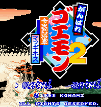
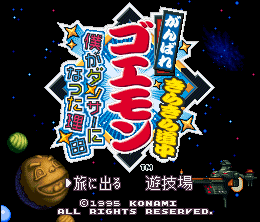
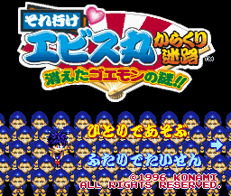

Ganbare Goemon - SNES Games
![[Ganbare Goemon]](images/snesGoemon.gif)
- US Title: Legend of the Mystical Ninja
- Company: Konami
- Genre: Action RPG
Controls
- A button: Use Weapon
- B button: Jump
- X button: [not used]
- Y button: Use Weapon
- L button: [not used]
- R button: Change Weapons
- Start: Pause
- Select: Inventory
This is just like every other Goemon game released. You run around the level bashing the enemies that come
your way. Wepons that are available include coins, bombs, a cane, a yo-yo (Kid Ying), and a flute (Ebisumaru and Dr. Yang).

- Company: Konami
- Date Released: 1993
- Genre: Platform game
Controls
- A button: Use Weapon
- B button: Jump
- X button: [not used]
- Y button: Use Weapon
- L button: [not used]
- R button: Select Weapon
- Start: Pause
- Select: [not used]
![[Ganbare Goemon 3]](images/snesGoemon3.gif)
- Company: Konami
- Date Released: 9 July 1991 (re-released 1994)
- Price (in yen): 8800 (re-release price 1000)
- Genre: Action RPG
Controls
- A button: Jutsu/Shoot (on walker) if Weapon is Fire or Ice/Shoot Gold Coins (on giant robot)
- B button: Jump/Heavy Punch (on giant robot)
- X button: Use Bomb (on giant walker)
- Y button: Use Weapon/Punch (on walker)/Light Punch (on giant robot)
- L button: Change Weapon/Block Left (on giant robot)
- R button: Change Weapon/Block Right (on giant robot)
- Start: Pause
- Select: Change Character
From Jacob Poon:
You run around the level bashing the enemies that come your way. There is a new feature to this game; you start out with
Goemon plus a friend. Pressing Select will change between the two. The screen brought up by pressing Start
shows that you can pick up two other characters along the way.
The jutsu from the first game is back. This time it's permenant and free. However you have to pass the master's
training to get it (except for Sasuke's jutsu). To grab a small block press Forward + Y to grab the block; then
press Y again to throw it. To jump off the walker, press Up + B. Hold Y + a direction to get
the walker to dash in the facing direction. While on the giant robot, you take damage from bombs you throw, and the
strength of your heavy punch depends on the meter on top of the cockpit.
| Character |
Scroll Cost |
Effect |
| Goemon |
10 |
Temporary increases attack damages. |
| Ebisumaru |
0 |
Shrinks himself. Press A to restore. |
| Sasuke |
10 |
Fires eight projectiles around himself. |
| Yae |
0 |
Turns into mermaid. While in mermaid form, she can swim under water. Press Y
will dash and attack the enemy. Press A to restore. If you use it on land, she will be immobilized.
|

- Company: Konami
- Price (in yen): (re-release price 1000)
- Genre: Action RPG
Controls
- A button: [not used]
- B button: Jump
- X button: [not used]
- Y button: Use Weapon
- L button: Change Weapon
- R button: Change Weapon
- Start: Pause
- Select: [not used]
You run around the level bashing the enemies that come your way. What makes this game unique are the characters
and the setting. Apparently, Goemon has somehow been transported to an alien version of feudal Japan.

- Company: Konami
- Date Released: 1996
- Price (in yen): (re-release price 1000)
- Genre: Puzzle Game
Controls
- A button: Run
- B button: [not used?]
- X button: Move Cursor
- Y button: Bounce Square
- L button: [not used?]
- R button: Move Screen Right
- Start: Pause
- Select: [not used?]
This is a unique puzzle game; you are placed on a board with a goal to reach. There are yellow lines on the board with
pink squares overlaying parts. Goemon runs along the path of the yellow line he is on; your job is to bounce the square
underneath Goemon to get him onto a different yellow line. This is how you proceed to the goal; you also have a time
limit adding to the pressure.
There seems to be RPG elements as well. Initially, you start out walking around a town; various shops are around.
The puzzles are the green pools lying around in the town.
Anime Video Game Resource Center © 1998 by Luis A. Cruz